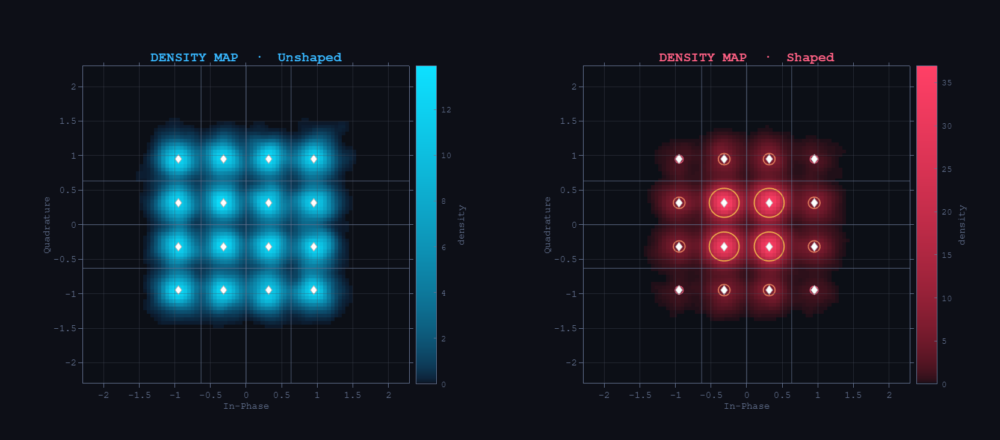

01
Terahertz Wireless Communications
Experimental 300 GHz (WR-3) transmission systems with photonic upconversion. Demonstrated throughputs exceeding 109 Gbit/s, and a record 221 Gb/s dual-polarisation link over 500 m.
Advancing 6G Photonic
Networks &
THz Wireless
01 — Research
My work spans the full THz signal chain — from photonic upconversion and probabilistic shaping to converged optical/wireless 6G architectures.
01
Experimental 300 GHz (WR-3) transmission systems with photonic upconversion. Demonstrated throughputs exceeding 109 Gbit/s, and a record 221 Gb/s dual-polarisation link over 500 m.

02
Rate-adaptive modulation approaching the Shannon limit. Time-adaptive PCS for combined optical/THz links, plus neural-network-based photodiode nonlinearity mitigation.

03
Seamless integration of THz wireless into fiber-optic backhaul. Adaptive baseband techniques for converged links — the core of my PhD dissertation at TU Berlin.
04
Optical signal processing on integrated photonic chips using neural network architectures — enabling modulation format identification, optical signal correction, and low-power feature generation entirely in the optical domain.
02 — Publications
First-author papers highlighted. Google Scholar • IEEE Xplore
In-Ho Baek, J. Honecker, M. Bittiehn, R. Elschner, C. Schubert, R. Freund
In-Ho Baek, O. Stiewe, R. Elschner, M. Rösch, A. Tessmann, M. Nölle, L. Molle, C. Schubert, R. Freund
In-Ho Baek, O. Stiewe, J. Gläsel, S. Nellen, G. Schwanke, T. T. Tran, R. Elschner, C. Schubert, R. B. Kohlhaas, P. Runge, M. Schell, R. Freund
In-Ho Baek, O. Stiewe, J. Gläsel, M. F. Ulukan, A. Schindler, F. Ganzer, T. T. Tran
In-Ho Baek, O. Stiewe, S. Nellen, G. Schwanke, R. Elschner, C. Schubert
In-Ho Baek, F. Bart, R. Elschner, F. Meier, D. Hellmann, A. Maassen, C. Schubert
R. Elschner, F. Bart, F. Meier, O. Stiewe, IH Baek et al.
C. Schubert, R. Elschner, O. Stiewe, IH Baek et al.
C. Schmidt-Langhorst, J. Pfeiffer, R. Elschner, R. Emmerich, F. Chowanek, IH Baek, R. F. H. Fischer, C. Schubert
03 — Expertise